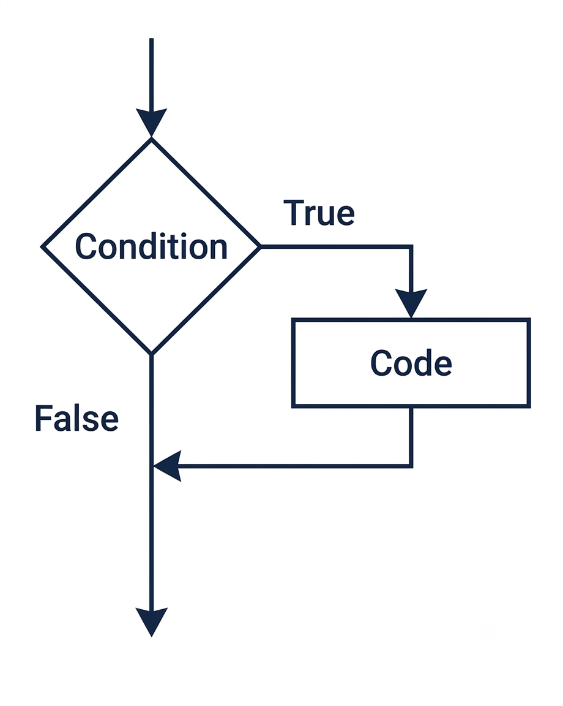
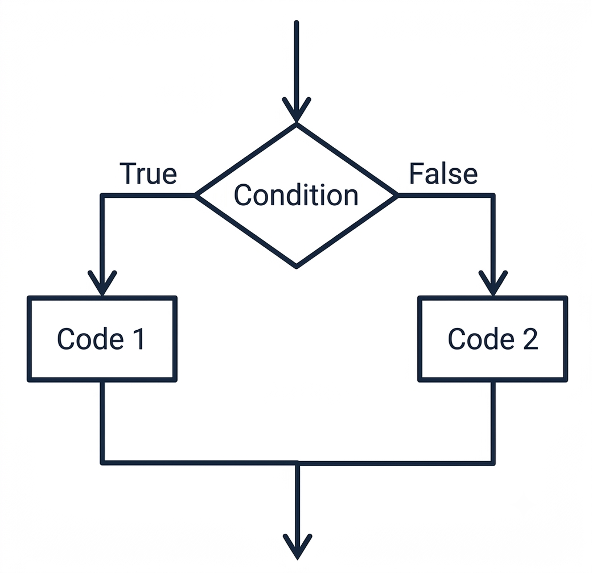
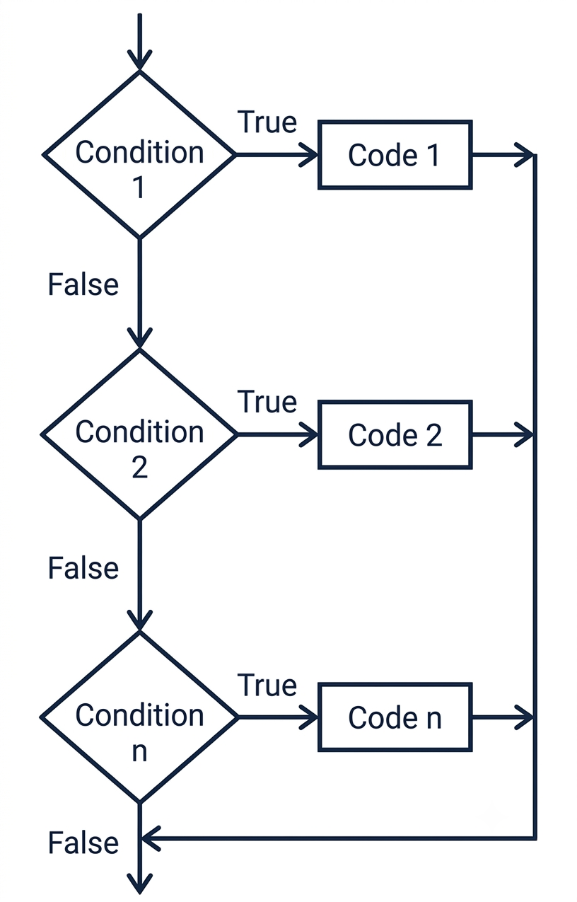

C++
| Operator | Meaning |
|---|---|
== |
equal to |
!= |
not equal to |
< |
less than |
> |
greater than |
<= |
less than or equal to |
>= |
greater than or equal to |
Each expression evaluates to either true or false.
The single equals sign changes a variable. The double equals sign compares two values.
| Shape | Example |
|---|---|
| Threshold | age >= 21 |
| Exact choice | choice == 1 |
| Boundary | temperature < 32 |
| Different value | menuChoice != 0 |
Integers can usually be compared directly. Floating-point values may not store the exact value you expect.
The printed value may look like 4, but the stored value may be slightly different.
Decide how close is close enough before calling floating-point values equal.
true or false.if statement gives the program one conditional action.
Braces make the controlled region visible. Use them even when the block starts with one statement.
Separate if statements ask separate questions.
Read this as: if temperature is less than 32, print "Freezing".
if statement runs a block only when its condition is true.true or false.if statement.This statement expects input that can become an int. Text such as hello cannot be stored in age.
cin.fail() is a condition. It is true when the previous input operation failed.
cin.fail() tells the program that input failed.
It does not repair the stream, remove the bad input, or ask the user again. Those actions must be written separately.
After a failed extraction, later input attempts may not work.
The stream is still carrying the failed state. The bad input may also still be waiting to be read.
The condition detects the problem. The recovery code clears the error state and removes the bad input.
The recovery block should run only when input failed.
That makes cin.fail() a practical example of one-way selection: if the problem happened, respond to it.
cin.fail() detects that failed state.if/else statement gives the program two mutually exclusive paths.
Exactly one branch runs, then the paths rejoin.
The else branch belongs to the condition above it. If the question is false, the alternate action runs.
The condition asks whether the person meets the age requirement. The else handles everyone who does not.
Use separate if statements when both conditions could be true.
Use if/else when one path must be true and the other must be false.
The else already means the condition was false. A second opposite test is not needed.
if/else creates a two-way decision.if branch runs when the condition is true.else branch runs when the condition is false.if/else if chain checks multiple conditions in order.
The program checks the first condition.
If that condition is false, the program moves to the next condition. The first true branch runs, and the rest are skipped.
The first if starts the chain. It should represent the first category the program needs to test.
Each else if adds another possible category.
The final else handles none of the above. It gives the chain a default outcome.
A score of 95 never reaches the second branch because the first condition is already true.
| Need | Use |
|---|---|
| Do something only when true | if |
| Choose between two paths | if/else |
| Choose among several categories | if/else if |
if/else if chain handles several mutually exclusive categories.if statements run code only when a condition is true.if/else and if/else if structures choose among mutually exclusive paths.cin.fail(), but detection and recovery are separate steps.score >= 70 over clever expressions that hide the condition.= when the intent is comparison.0 < score < 100 as if C++ handled them like algebra.Each expression asks one yes/no question.
score is at least 90.choice is not 0.temperature is below freezing.if statement when the action is optional.if statement that prints a warning when speed is greater than 65.if statement that prints a message when balance is less than 0.if statement that protects division by checking the denominator first.cin.fail() fixes the stream.This detects the problem. A complete recovery also clears the stream and removes the bad input.
cin >> age fail.cin trying to read?if/else when the two outcomes exclude each other.else mean “everything that did not satisfy the if condition.”else already covers it.if statements for a choice that must select only one path.Only one of these messages can print.
if/else that prints pass when score >= 70 and retry otherwise.if statements are not the best fit for a yes/no choice.else represent?else when the program needs a default path.if/else if chain when independent checks would be clearer.The first true branch wins.
if, if/else, or if/else if.CISP 400 · Fowler